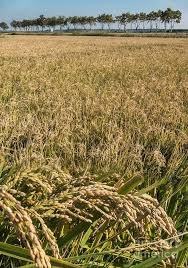

We connect Farmers, Government and Buyers. Farmers sell directly to buyers at real market prices, eliminating middlemen.
Our mission is to support local agriculture and promote sustainable farming practices.
Whether you're a farmer or buyer, e-LinkAcre helps you connect and thrive in the agricultural community.
In Burera, Musanze, Gicumbi, Gakenke, Rulindo, Nyamagabe, Nyaruguru, Nyabihu, Rubavu districts. Specifically in high-altitude zones,Musanze district-Kinigi sector, approximately 11,667 to 13,045 metric tonnes (MT) of wheat will be harvested in two to three months
Approved by: District Agronomists
Read more...
In Rusizi (Bugarama marshland), Nyagatare (Muvumba marshland), Kirehe, Bugesera, Rwamagana, and Nyamasheke (Kirimbi marshland). 71,080 Metric Tons are the expexted amounts to be harvested in three months
Approved by: District Agronomists
Read more...
In all agroecological regions in the country, the expexted amounts to be harvested around 200 to 250 tons, in two months coming
Approved by: District Agronomists
Read more...